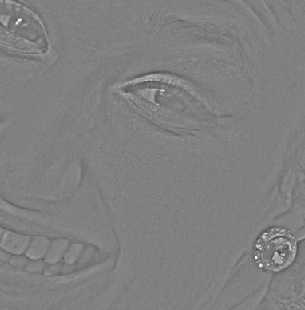
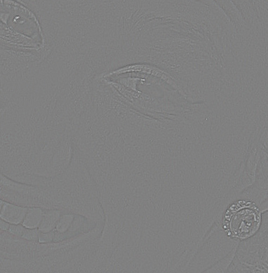

Using the High Pass Filter
Sharpening and Softening an Image
This filter will isolate the edges of your image. The great thing about this is you can both sharpen and soften portions of a photograph with great control over the effect. Additionally, because you are creating new layer(s), the original image is left unmodified.
Process to Create a Soft-Focus Effect
- Starting with this photo , duplicate the background layer (Command-J).
- Fix any skin blemishes before you begin (the Spot Healing Brush tool is awesome for this).
- Using the duplicate, choose Filter > Other > High Pass.
- Set the radius so that the edges are just visible and then a bit more. Try 3.5 pixels, which will make the layer look like this:

- Desaturate this grayish layer using the keyboard shortcut Shift-Command-U.
- Invert the layer with keyboard shortcut Command-I, or menu item Image > Adjustments > Invert.
- Blend the layer using “Overlay”. If you want less softening, choose “Soft Light”; for more, choose “Hard Light”.
- Back-off the amount of softening, if you wish, by dropping the opacity of the High Pass layer.
- Add a mask to isolation only certain parts of the image. For this image, I will create a black mask by Option-clicking the mask button. Next, using a soft white brush, paint onto the mask the areas that should be softened.
Skin Smoothing Technique
This technique is very similar to the Soft-Focus effect, but is particularly good on skin. It looks like you have added foundation make-up; it will even out the coloring a bit, but still leaves the skin texture.
- Do steps 1–3 from above.
- For step 4, increase the High-pass radius to 9 (a higher number here will increase the effect). The radius must be divisible by 3.
- Apply a gaussian blur to the High-pass layer where the blur amount is 1/3 of the High-pass radius (in this case, 3).
- Do steps 5–9 above.
Process to Sharpen an Image
We are going to continue on with the same image to sharpen other areas in the picture.
- Duplicate the background layer (Command-J).
- Using the duplicate, choose Filter > Other > High Pass.
- Set the radius so that the edges are just visible. Try 1.2 pixels, which will make the layer look like this:

- Blend the layer using “Overlay”. If you want less sharpening, choose “Soft Light”; for more, choose “Hard Light”.
- Back-off the amount of sharpening, if you wish, by dropping the opacity of the High Pass layer.
- Add a mask to isolate only certain parts of the image. For this image, I will duplicate the mask from the softening step by Option-dragging the mask to this new sharpening layer.
- Now invert the mask by pressing Command-I.
- Continue to tweak by brushing in areas that should be masked or revealed as necessary.
{kind=link}